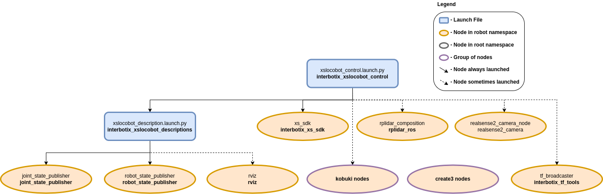

LoCoBot Control
 View Package on GitHub
View Package on GitHub
Overview
This package contains the configuration and launch files necessary to easily start the X-Series
LoCoBot platform. This includes launching the xs_sdk node responsible for driving the DYNAMIXEL
motors on the robot, loading the URDF to the robot_description launch configuration, starting
the mobile base nodes, and activating the depth camera and 2D lidar. Essentially, this package is
what all 'downstream' ROS packages should reference to get the robot up and running.
Structure
As shown in the image above, the interbotix_xslocobot_control package builds on top of the interbotix_xslocobot_descriptions and interbotix_xs_sdk packages among many others. To get familiar with the nodes not described below, just hop over to the package documentation that launches them.
- rplidar_composition: responsible for starting the RPlidar A2M8 sensor and publishing
LaserScan messages on the
/<robot_name>/scantopic. This node is only launched if theuse_lidarlaunch configuration is set totrue. See the RPLidar ROS Wiki for parameter descriptions. All parameters were left at their default values except for the following:- frame_id:
/<robot_name>/laser_frame_link - serial_port:
/dev/rplidar - angle_compensate:
true
- frame_id:
- kobuki nodes: a group of three nodes responsible for starting the Kobuki base. See the
Kobuki ROS Wiki for parameter descriptions. These nodes are only launched if the
base_typelaunch configuration is set tokobukiand theuse_baselaunch configuration is set totrue. All parameters were left at their default values except for the following:- odom_frame:
/<robot_name>/odom - base_frame:
/<robot_name>/base_footprint - acceleration_limiter:
true
- odom_frame:
- create3 nodes: a group of nodes responsible for controlling the Create® 3 mobile base. These nodes are managed onboard the Create® 3 and will always be running if the base is turned on. The parameters can be changed using its webserver.
- tf_rebroadcaster: rebroadcasts TFs from the Create® 3's namespaces TF topic to the root TF
topic. This node is only launched if the the
use_base_odom_tfanduse_baselaunch configurations are set totrueand if thebase_typelaunch configuration is set tocreate3. As of the time of writing these packages, it was not possible to tell the Create® 3's nodes to publish the TF in the root TF namespace so this node serves as a workaround. The node is configured using the tf_rebroadcaster.yaml configuration file. - realsense2_camera_node: responsible for running the RealSense D435 camera and publishing a variety of image topics. See the realsense_ros repository for parameter descriptions. See the rs_camera.yaml configuration file for detailed parameter information.
You will also notice a config directory containing many YAML files. Each file (beside the modes.yaml one and the others mentioned above) specifies the names and initial register values for all the motors that make up a specific locobot. There is also some 'meta-info' like names of joint groups, the desired joint-topic name and publishing frequency, etc. For a full explanation of each of these parameters, check out the Motor Config file template. The other file located in that directory is the Mode Config one (a.k.a mode.yaml). The parameters in there define the desired operating modes for either a group of joints or single joints, and whether or not they should be torqued on/off at node startup. See more by referencing the Mode Config file template. Typically, the Motor Config file is only defined here while the Mode Config file is also defined in any 'downstream' ROS package. This makes it easy for users to configure their desired motor operating modes depending on their project.
Usage
To run this package on the physical robot, type the line below in a terminal (assuming the
locobot_wx200 is being launched with the onboard lidar and camera).
$ ros2 launch interbotix_xslocobot_control xslocobot_control.launch.py robot_model:=locobot_wx200 use_base:=true use_lidar:=true use_camera:=true
If you are working from a remote computer and would like to visualize the robot using RViz, open a terminal on your remote and run:
$ ros2 launch interbotix_xslocobot_descriptions remote_view.launch.py
Note that in order for this to work, you must first run the remote installation script on your remote computer.
To further customize the launch file at run-time, refer to the table below.
| Argument | Description | Default | Choices |
|---|---|---|---|
| robot_model | model type of the Interbotix LoCoBot such as locobot_base or locobot_wx250s. |
EnvVar(INTERBOTIX_XSLOCOBOT_ROBOT_MODEL) |
locobot_base, locobot_px100, locobot_wx200, locobot_wx250s |
| robot_name | name of the robot (could be anything but defaults to locobot). |
locobot |
|
| arm_model | the Interbotix Arm model on the LoCoBot; this should never be set manually but rather left to its default value. | PythonExpr('"mobile_" + "' + LaunchConfig(robot_model) + '".split("_")[1]') |
|
| use_rviz | launches RViz if set to true. |
false |
true, false |
| rviz_frame | fixed frame in RViz; this should be changed to map or odom if mapping or using local odometry respectively. |
LaunchConfig(robot_name) + '/base_link' |
|
| use_base | if true, the base ROS nodes are launched. |
false |
true, false |
| use_base_odom_tf | if true, the odom TF from the base will be published. This only works on the Create 3 base. |
true |
true, false |
| base_type | the type of mobile base used by the robot. | EnvVar(INTERBOTIX_XSLOCOBOT_BASE_TYPE) |
kobuki, create3 |
| use_lidar | if true, the RPLidar node is launched. |
false |
true, false |
| use_camera | if true, the RealSense camera nodes are launched. |
false |
true, false |
| rs_camera_pointcloud_enable | enables the RealSense camera's pointcloud. | true |
true, false |
| rs_camera_logging_level | set the logging level for the realsense2_camera launch include. | info |
debug, info, warn, error, fatal |
| rs_camera_output_location | set the logging location for the realsense2_camera launch include. | screen |
screen, log |
| rs_camera_initial_reset | On occasions the RealSense camera is not closed properly and due to firmware issues needs to reset. If set to true, the device will reset prior to usage. |
false |
true, false |
| motor_configs | the file path to the 'motor config' YAML file. | LocalVar('FindPackageShare(pkg= interbotix_xslocobot_control) + 'config' + LaunchConfig(robot_model)') + '.yaml' |
|
| mode_type | base if the robot_model is locobot_base; all otherwise |
PythonExpr('"base" if "' + LaunchConfig(robot_model) + '" == "locobot_base" else "all"') |
|
| mode_configs | the file path to the 'mode config' YAML file. | LocalVar('FindPackageShare(pkg= interbotix_xslocobot_control) + 'config' + 'modes_'') + LaunchConfig(mode_type) + '.yaml' |
|
| load_configs | a boolean that specifies whether or not the initial register values (under the 'motors' heading) in a Motor Config file should be written to the motors; as the values being written are stored in each motor's EEPROM (which means the values are retained even after a power cycle), this can be set to false after the first time using the robot. Setting to false also shortens the node startup time by a few seconds and preserves the life of the EEPROM. |
true |
true, false |
| xs_driver_logging_level | set the logging level of the X-Series Driver. | INFO |
DEBUG, INFO, WARN, ERROR, FATAL |
| use_sim | if true, the DYNAMIXEL simulator node is run; use RViz to visualize the robot's motion; if false, the real DYNAMIXEL driver node is run. |
false |
true, false |
| use_sim_time | tells ROS nodes asking for time to get the Gazebo-published simulation time, published over the ROS topic /clock; this value is automatically set to true if using Gazebo hardware. |
false |
true, false |
| use_gripper | if true, the default gripper is included in the robot_description; if false, it is left out; set to false if not using the default gripper. |
true |
true, false |
| show_ar_tag | if true, the AR tag mount is included in the robot_description; if false, it is left out; set to true if using the AR tag mount in your project. |
true |
true, false |
| show_gripper_bar | if true, the gripper_bar link is included in the robot_description; if false, the gripper_bar and finger links are not loaded. Set to false if you have a custom gripper attachment. |
true |
true, false |
| show_gripper_fingers | if true, the gripper fingers are included in the robot_description; if false, the gripper finger links are not loaded. Set to false if you have custom gripper fingers. |
true |
true, false |
| show_lidar | if true, the lidar is included in the robot_description; only set to true if you purchased a lidar with your locobot. |
false |
true, false |
| external_urdf_loc | the file path to the custom urdf.xacro file that you would like to include in the Interbotix robot's urdf.xacro file. | '' | |
| hardware_type | configures the robot_description to use the actual hardware, fake hardware, or hardware simulated in Gazebo. |
actual |
actual, fake, gz_classic |
| robot_description | URDF of the robot; this is typically generated by the xacro command. | Command(FindExec(xacro) + ' ' + LocalVar('FindPackageShare(pkg= interbotix_xslocobot_descriptions) + 'urdf' + 'locobot.urdf.xacro'') + ' ' + 'arm_model:=' + LaunchConfig(arm_model) + ' ' + 'robot_name:=' + LaunchConfig(robot_name) + ' ' + 'base_model:=' + LaunchConfig(base_type) + ' ' + 'robot_model:=' + LaunchConfig(robot_model) + ' ' + 'use_gripper:=' + LaunchConfig(use_gripper) + ' ' + 'show_ar_tag:=' + LaunchConfig(show_ar_tag) + ' ' + 'show_gripper_bar:=' + LaunchConfig(show_gripper_bar) + ' ' + 'show_gripper_fingers:=' + LaunchConfig(show_gripper_fingers) + ' ' + 'show_lidar:=' + LaunchConfig(show_lidar) + ' ' + 'external_urdf_loc:=' + LaunchConfig(external_urdf_loc) + ' ' + 'hardware_type:=' + LaunchConfig(hardware_type) + ' ') |